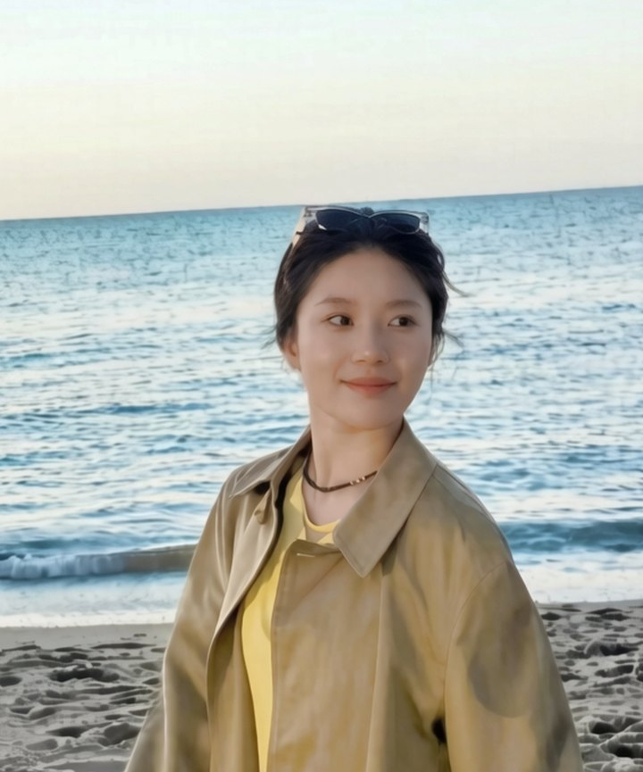

Yaqi Hu
Yaqi Hu is an M.A. student in Media Studies and Production at Temple University, where she trains in the Neuroeconomics Lab led by Prof. David V. Smith.
Broadly I study how hidden cognitive states can be recovered from the traces they leave in behavior, brain activity, and language (and how observers, from scientists to language models, read them from limited evidence). I am interested in computational cognitive science, decision neuroscience, and human–AI interaction.
recent
- applying to PhD programs for Fall 2027
- preparing Rethinking Behavioral Drift for journal submission
- building my M.A. project, How Do LLMs Read Our Minds?
- helping design a two-visit fMRI study in the Neuroeconomics Lab
- presented choice inconsistency at the Smith lab meeting, Nov 2026